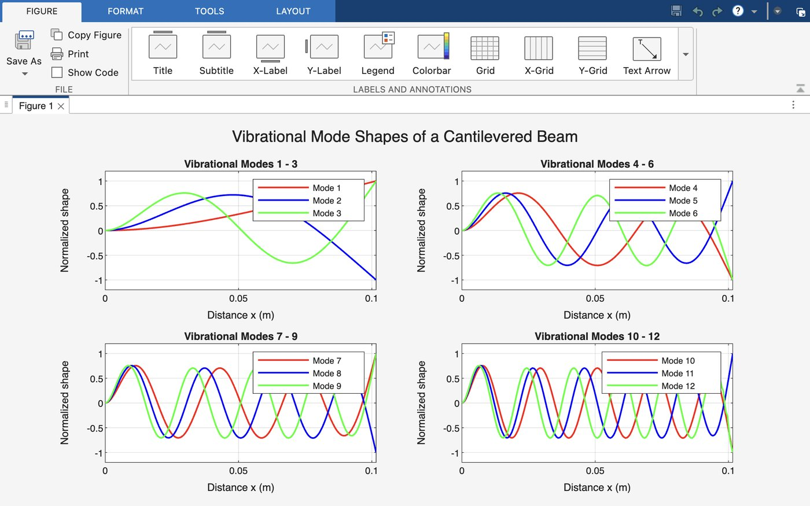
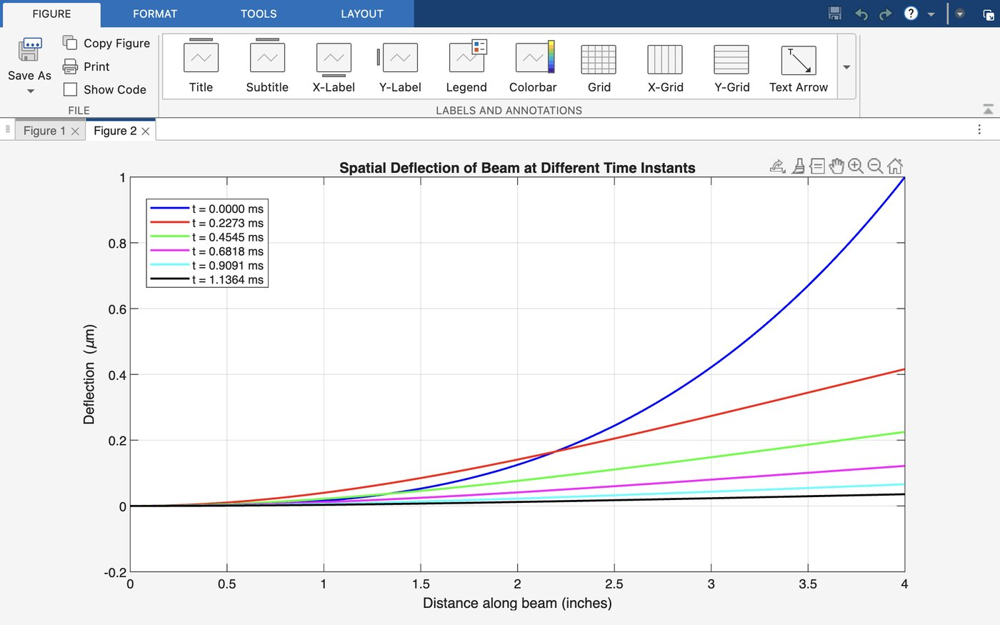

Tuning Fork Vibrations Simulator
Designed and implemented a MATLAB simulation to model tuning fork vibrations using Euler-Bernoulli beam theory. The program computes natural frequencies, visualizes vibrational mode shapes, simulates transient beam deflection, and determines tuning fork dimensions for musical notes A0-A7 across multiple materials and cross-sectional geometries.

Overview
This project models each tine of a tuning fork as a cantilevered beam using Euler-Bernoulli beam theory. The objective was to predict its vibrational behavior, simulate beam deflection over time, and determine the material properties and geometric dimensions required to produce specific musical pitches.
The analysis covered notes A0 through A7 (27.5-3520 Hz) using steel, brass, and aluminum with both rectangular and circular cross-sections.
Theoretical Approach
Each tuning fork tine is modeled as a cantilevered beam: fixed at x = 0, free at x = L. The beam's fundamental frequency is governed by:
where z₁ is the first root of the beam's characteristic equation, E is the material's modulus of elasticity, I is the second moment of area, ρ is density, and a is cross-sectional area.
The corresponding mode shapes come from the beam's eigenfunction equation:
with the coefficient B_k determined by the boundary conditions:
Numerical Methods
The beam's characteristic equation, cosh(z)cos(z) + 1 = 0, has no closed-form solution for its roots. I used Newton-Raphson root-finding (implemented in NewtRaph.m) to solve for the first 12 values of β, which in turn gave the first 12 vibrational modes and natural frequencies.
For the time-dependent behavior, I used a finite difference method to discretize the beam equation spatially and step the solution forward in time, solving a linear system Aw⁽ⁿ⁺¹⁾ = b at each time step.
Program Architecture
The project was organized into five MATLAB scripts, each handling a distinct part of the analysis, reading from two shared data files: materials.dat (E, ρ, and cost per pound for steel, brass, and aluminum) and arm_length.dat (arm lengths for each of the eight notes A0–A7).
Summary.m
Displays the required tuning fork dimension (either arm thickness h for rectangular or radius r for circular) and material cost for each of the 8 musical notes, across every combination of steel/brass/aluminum and rectangular/circular cross-section.
Products.m
Runs the same dimension and cost calculations as Summary.m, but exports the results to six CSV files (one per material/cross-section combination), each an 8×2 matrix of dimension and cost values to 4 decimal places, named <material>_<cross-section>.csv.
VibrationalModes.m
Calculates the first 12 vibrational modes of a 4-inch cantilevered beam using 201 spatial points, calling NewtRaph.m to solve for the 12 β roots. Produces the four-subplot mode shape figure (three modes per subplot) shown above, and saves the underlying x, β, and W data to VibrationalModes.mat.
DynamicSolution.m
Sets up a time-stepping simulation (301 time steps) at 440 Hz for a brass rectangular arm, calling the Deflection function to compute the beam's response over time. Produces two figures — a time series of deflection at the 1", 2", and 4" positions along the beam, and a spatial deflection plot at six time instants — and saves the results to DynamicSolution.mat.
Deflection.m
The core finite difference function, implementing the beam equation's time-stepping scheme. Takes nine inputs — initial deflection, material and geometric properties, spatial and time step sizes, and the number of spatial and time points — and returns the full deflection matrix over space and time.
Vibrational Mode Shapes
Using the Newton-Raphson roots and the mode shape equation, the program computed the first 12 vibrational mode shapes of the beam. The progression from broad, single-curve shapes in modes 1–3 to tightly oscillating shapes in modes 10–12 reflects the increasing number of nodes at higher mode numbers.
Dynamic Deflection Simulation
DynamicSolution.m simulated a brass rectangular arm vibrating at 440 Hz over 301 time steps. The plot below shows the beam's spatial deflection profile at six time instants.The simulation tracks how beam deflection evolves during vibration. As expected for a cantilevered beam, displacement is constrained at the fixed end while the free end experiences the largest motion. The changing deflection profiles demonstrate the beam's transient dynamic response over time.

Design Formulas
To determine what geometry a tuning fork needs to produce a target musical note, I solved the fundamental frequency equation backward for the beam's key dimension:
Each target note's frequency was generated directly from musical pitch theory:
Engineering Challenge
The finite difference time-stepping scheme in Deflection.m solves Aw⁽ⁿ⁺¹⁾ = b at every time step. Early on, my b(m) vector only accounted for the time-stepping terms from the previous steps — but the scheme also needed the 4th spatial derivative contribution from the current time step folded into b(m) itself, not just A. Missing that term meant the simulation ran without errors, but produced physically wrong deflection behavior. Once I corrected b(m) to include both the time-stepping terms and the current-step spatial derivative, the deflection results matched expected beam behavior.
This was a useful reminder that a numerical scheme can run cleanly and still be wrong — the only way to catch it was checking the output against the physics I expected, not just checking that the code executed without errors.
Results & Lessons Learned
This project strengthened my understanding of structural dynamics, numerical methods, and computational modeling. Implementing both Newton-Raphson root finding and finite difference time integration demonstrated how analytical equations can be translated into engineering simulation tools. It also reinforced the importance of validating numerical results against physical behavior rather than relying solely on successful code execution.
Automating the pipeline end-to-end — from Summary.m and Products.m's dimension/cost calculations, through the mode shape and dynamic solvers, to CSV export — also reinforced the value of building reusable tools rather than one-off scripts for a single configuration. And the b(m) bug was a good reminder to validate numerical results against physical expectations, not just against successful execution.